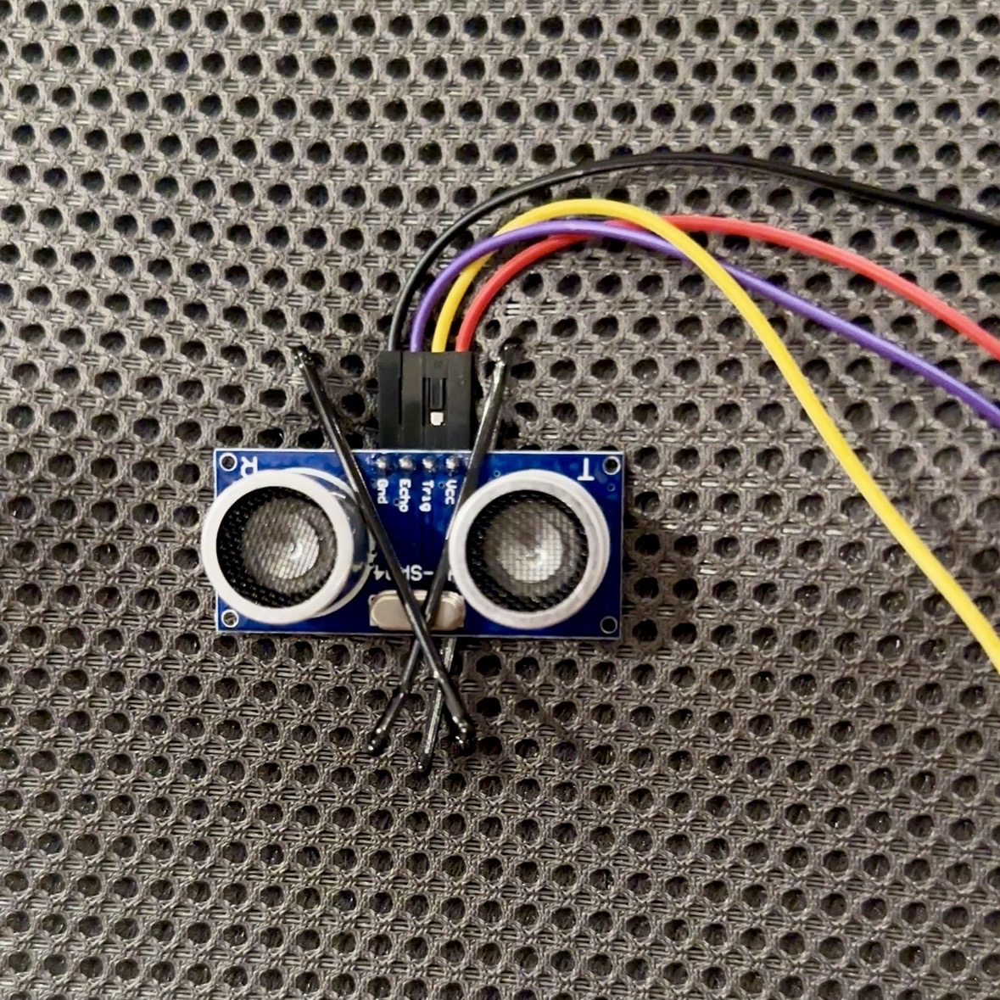
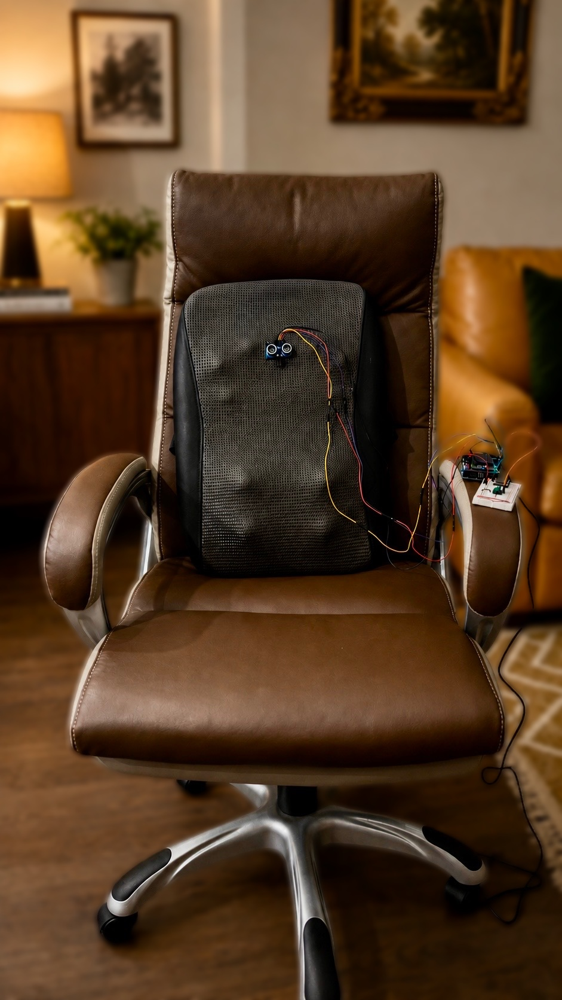
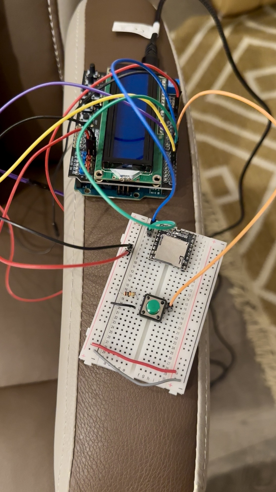

Embedded ergonomic monitor
One ultrasonic sensor clips to the back of your chair and tracks how you sit. No camera in your face, nothing strapped to your body.
// Current progress



// Motivation
// System architecture
The HC-SR04 sits on the chair back and measures the gap to your spine. The Arduino filters those readings and decides whether you're slouching. If you are, it lights up the screen and triggers the speaker.
Back stays near the chair — sensor reads ~14 cm.
Leaning forward off the backrest — gap grows to ~22 cm.
// Detection logic
Once you've calibrated, good posture just means the reading stays near your baseline. Slouch forward and the gap opens up. Drag the slider to run the same check the firmware runs.
// Calibration · a real sequence
Sit upright in your chair.
Press the LCD shield SELECT button.
The current distance is stored as your baseline posture.
The system announces "Calibration complete."
Continuous posture monitoring begins.
› The baseline comes from several filtered readings, not one raw ping — so it holds steady.
// Features
// Hardware · wiring
Core build: Arduino Uno R3, LCD Keypad Shield, HC-SR04, MP3-TF-16P, a small speaker, breadboard and jumper wires. Optional: battery pack, mounting bracket, 3D-printed enclosure.
| HC-SR04 | Arduino Uno |
|---|---|
| VCC | 5V |
| GND | GND |
| TRIG | D3 / PD3 |
| ECHO | D2 / PD2 |
| MP3-TF-16P | Arduino Uno |
|---|---|
| VCC | 5V |
| GND | GND |
| RX | D11 / PB3 · via 1k Ω |
| TX | not used |
| Speaker | MP3-TF-16P |
|---|---|
| Positive | SPK_1 |
| Negative | SPK_2 |
| Function | Detail |
|---|---|
| Display | 16×2 character LCD |
| SELECT button | A0 / ADC0 |
| Mounting | plugs onto Uno |
1k Ω resistor between Arduino D11 and MP3 RX100 µF capacitor across MP3 VCC and GND0.1 µF ceramic bypass capacitor near the module power pins// Audio prompts
Stored on the microSD card and named exactly so the firmware can call them by index.
// Bill of materials
| Item | Unit cost | Notes |
|---|---|---|
| Ultrasonic Distance Sensor — HC-SR04 | $5.25 | Single sensor |
| MP3-TF-16P | $1.75 | From $13.99 for 8 pcs |
| Small speaker | $1.50 | From $8.99 for 6 pcs |
| TF card | $9.50 | Single card |
| 1602 LCD Keypad Shield | $9.90 | Single unit |
| Arduino Uno R3 (ATmega328P) | $27.60 | Single board |
// Demo script
// Testing notes